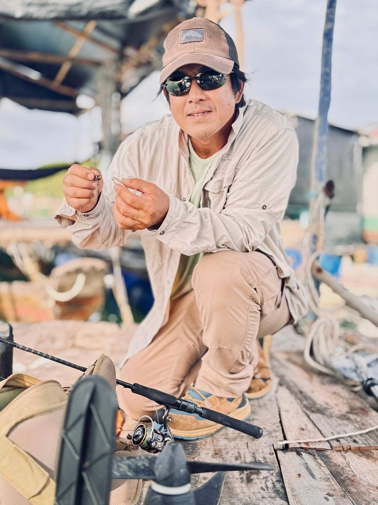
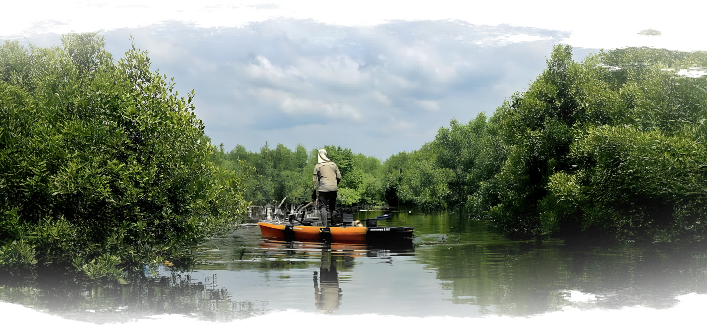
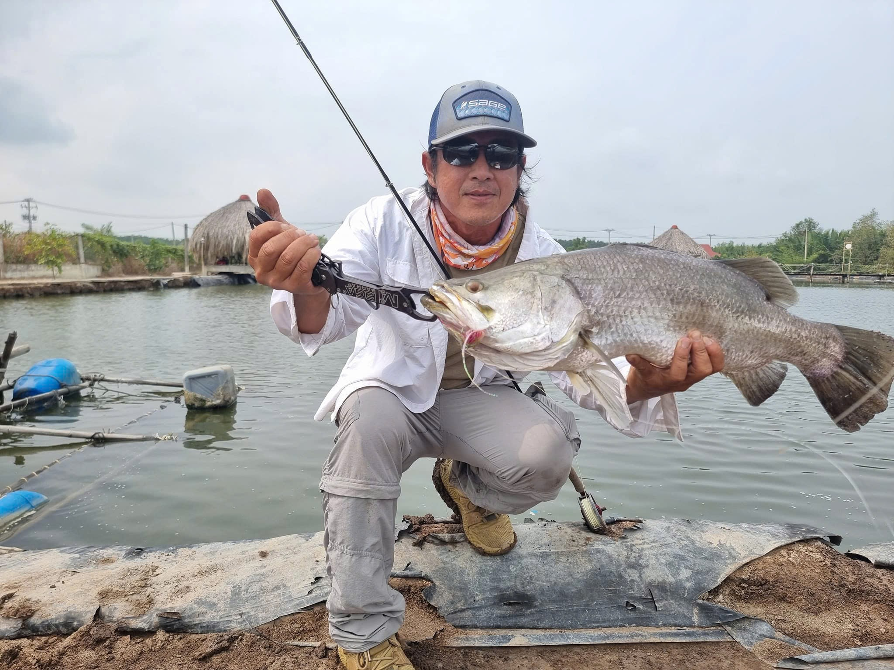
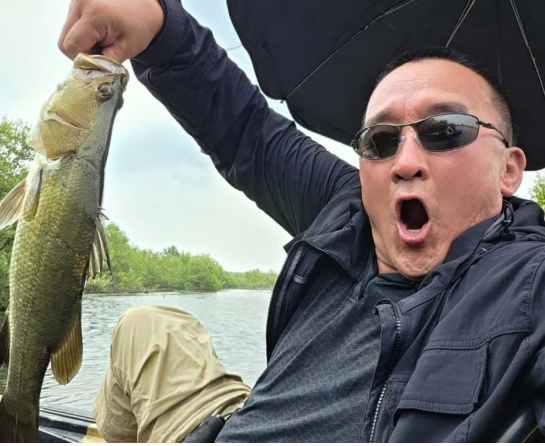
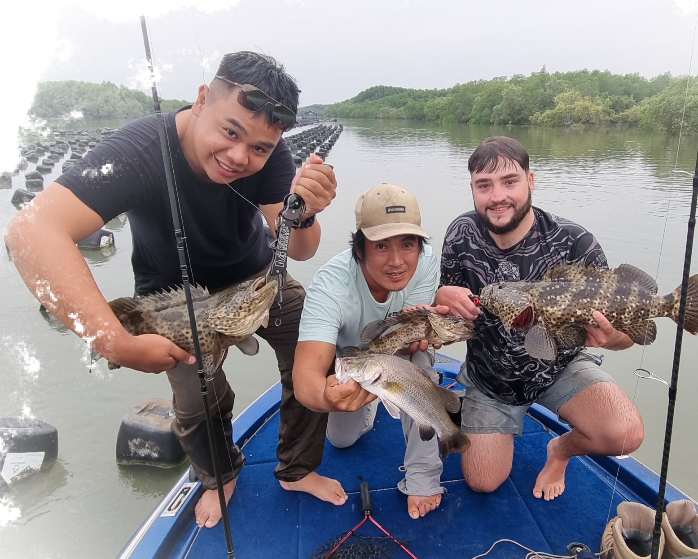
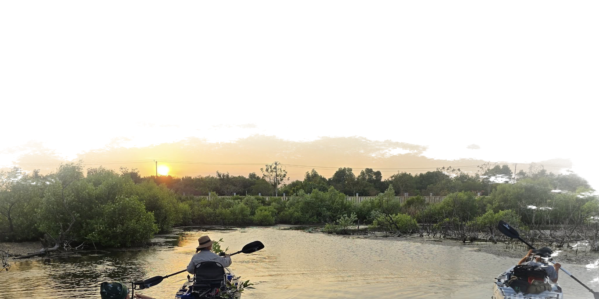

Our Story
Where Passion Comes Alive
VFO Fly Fishing Park was founded by Sang, a lifelong fisherman who grew up in the
mangrove forests of Cần Giờ. Over 20 years of experience inspired him to create
Vietnam’s first dedicated fly fishing and eco-tourism park — providing exclusive access
to a pristine 60-hectare lagoon sanctuary.
From traditional fishing lessons
with local fishermen to international guiding for guests from over 30 countries, Sang’s
journey reflects his passion for nature, sustainability, and education.


To offer safe, professional, and unforgettable fishing adventures that combine relaxation, exploration, and conservation — helping visitors experience the true natural beauty of Vietnam.
Our growing team includes passionate local guides, captains, and hospitality partners — all committed to sustainability and excellence.
Former wildlife officer and licensed captain. Oversees guide training, safety, and guest experience on the water.

Master angler with 20+ years of experience, specializing in fly and spin fishing. Certified in eco-tourism practices and a strong advocate for catch-and-release fishing.

Global partnerships and guest experience ensuring every trip reflects world-class standards.

Experienced guides and modern equipment

Blending adventure with comfort and learning

Committed to sustainable tourism and mangrove conservation

Every trip teaches respect for nature and local culture


Recognition & Milestones — Building a Legacy of Excellence
Founded VFO Fly Fishing Park
Established Vietnam’s first dedicated fly fishing and eco-tourism park, providing exclusive access to a private 60-hectare lagoon reserve
Led over 1,000 guided fishing and kayak expeditions with a 98% satisfaction rate, hosting guests from Europe, Asia, North America, and Australia.
Pioneered catch-and-release practices in the region and partnered with local authorities to protect mangrove habitats and marine biodiversity.